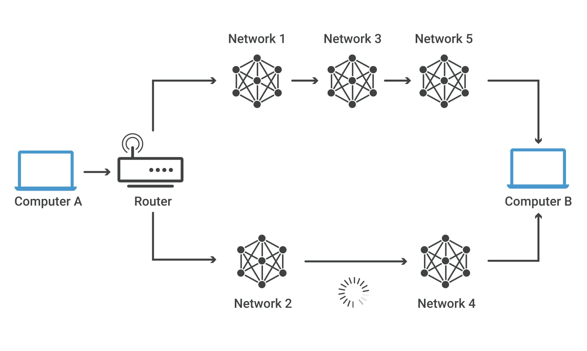

All devices that are connected to an internet connection have a unique IP address which means there’s a need of billions of IP addresses. This requirement is fulfilled by the new IP version IPv6.
There are two IP versions: IPv4 and IPv6. IPv4 is the older version which has an space of over 4 billion IP addresses. However, the new IPv6 version can provide up to trillions of IP addresses to fulfill the need of all internet users and devices.
A packet is, generally speaking, the most basic unit that is transferred over a network. When communicating over a network, packets are the envelopes that carry your data (in pieces) from one end point to the other.
Packets have a header portion that contains information about the packet including the source and destination, timestamps, network hops, etc. The main portion of a packet contains the actual data being transferred. It is sometimes called the body or the payload.
Routing is the process of moving packets between different networks, or in other words – from one network to another. A Router is a device which takes packets received on one network interface, and sends them out on another network interface which is along the path to the destination network. Routers read packet headers to find addressing information, and send them on to their correct destination on the network or Internet.
Consider the image below. For a data packet to get from Computer A to Computer B, should it pass through networks 1, 3, and 5 or networks 2 and 4? The packet will take a shorter path through networks 2 and 4, but networks 1, 3, and 5 might be faster at forwarding packets than 2 and 4. These are the kinds of choices network routers constantly make.
